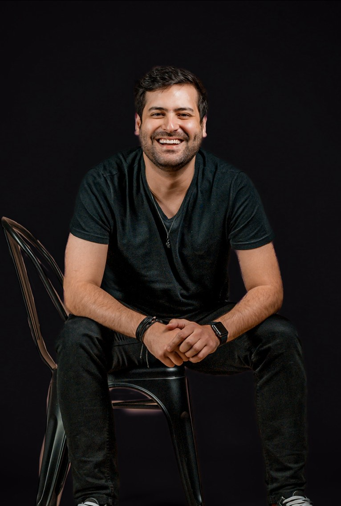

Chris construiu sua carreira liderando marketing em marcas como BMW, Rolls-Royce, Harley-Davidson e Pirelli — experiência que ajudou a formar uma convicção: negócios diferentes não deveriam receber as mesmas respostas.
Na BSPOKE, lidera estratégia, marca e crescimento, mantendo a visão do negócio próxima daquilo que efetivamente chega ao mercado.